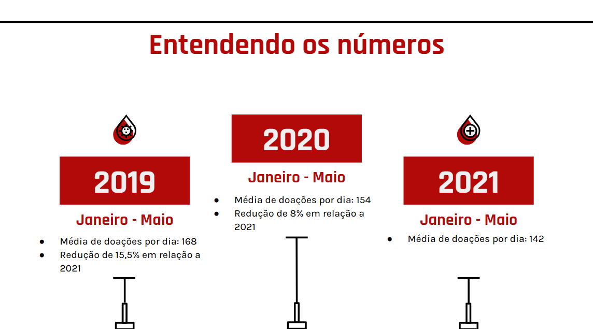

Com esses dados é visível a necessidade contínua mesmo com o crescimento, é importante lembrar que a demanda por sangue é constante, e manter estoques regulares é fundamental para atender pacientes em situações de emergência e tratamentos médicos. Portanto, é essencial continuar promovendo a doação de sangue em todas as regiões do Brasil. O aplicativo "DoaSangue Conecta" desempenhará um papel significativo na promoção e no apoio à doação de sangue no Brasil. Ele pode contribuir para o crescimento da coleta de sangue, equilibrar diferenças regionais, promover a conscientização e garantir estoques adequados para atender às necessidades de saúde pública em todo o país.
Análise

Introdução:
Esses dados de coleta de sangue em diferentes regiões do Brasil entre os anos de 2020, 2021 e 2022 revelam várias tendências e informações importantes: Em primeiro ponto que o Brasil experimentou um aumento constante na coleta de sangue ao longo desses três anos, com números passando de 2.958.665 em 2020 para 3.159.774 em 2022. Isso é uma indicação positiva de um aumento na conscientização e na participação de doadores.
Outra variável importante é que as regiões do Brasil apresentam variações na coleta de sangue. O Sudeste tem a maior coleta em números absolutos, seguido pelo Nordeste e Centro-Oeste. A região Sul apresenta números mais baixos em comparação com outras regiões, e a região Norte também apresentou um crescimento significativo na coleta de sangue ao longo dos anos. A tendência de aumento na coleta de sangue é uma boa notícia, pois indica que as campanhas de conscientização e os esforços para incentivar a doação estão funcionando em todo o país. E o aplicativo pode desempenhar um papel importante nessa tendência, incentivando a doação regular e fornecendo informações educacionais sobre a importância da doação de sangue.